旅遊公約
- 一起開心旅行
- 準時集合
- 想上廁所、不舒服、肚子餓一定要說
- 離開群體至少讓兩個人知道
淺草中央酒店（Asakusa Central Hotel）
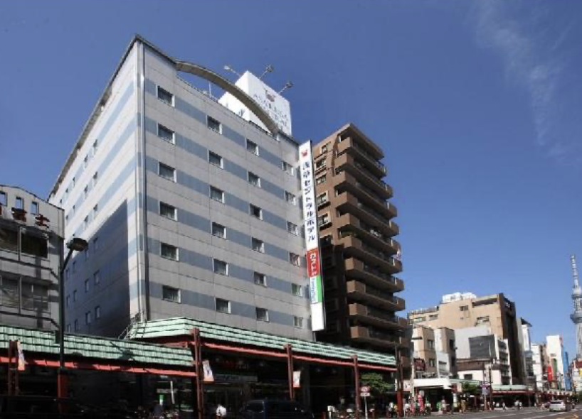
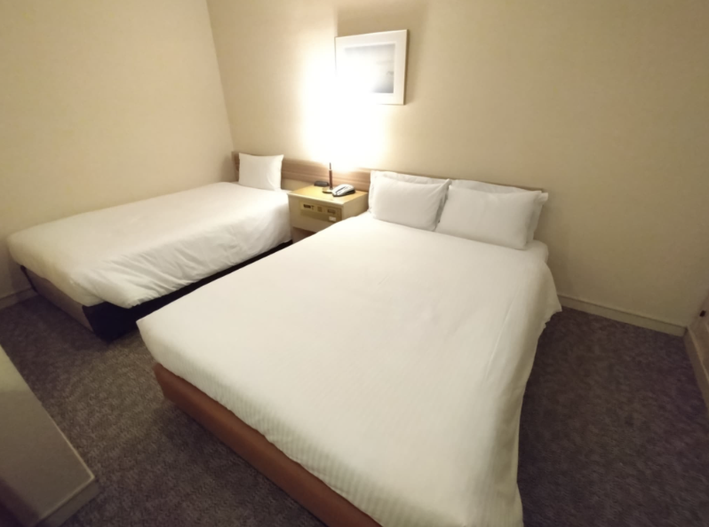
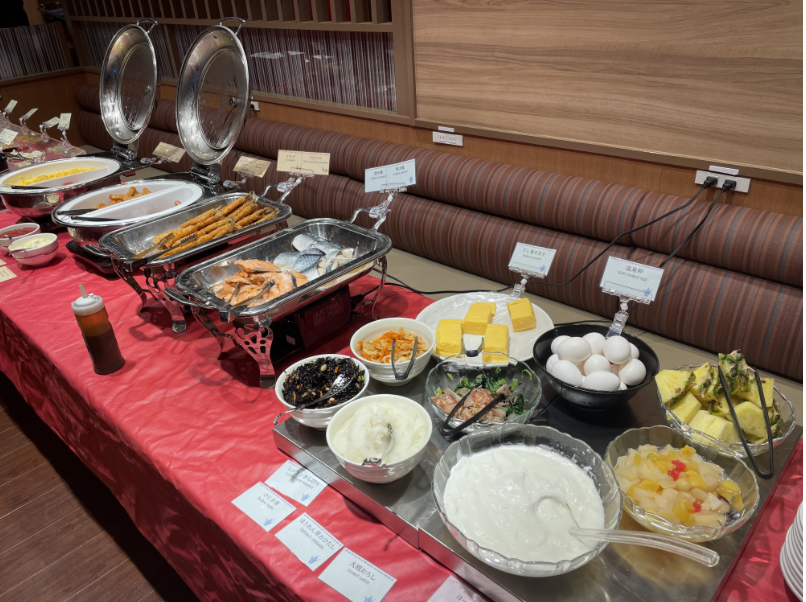
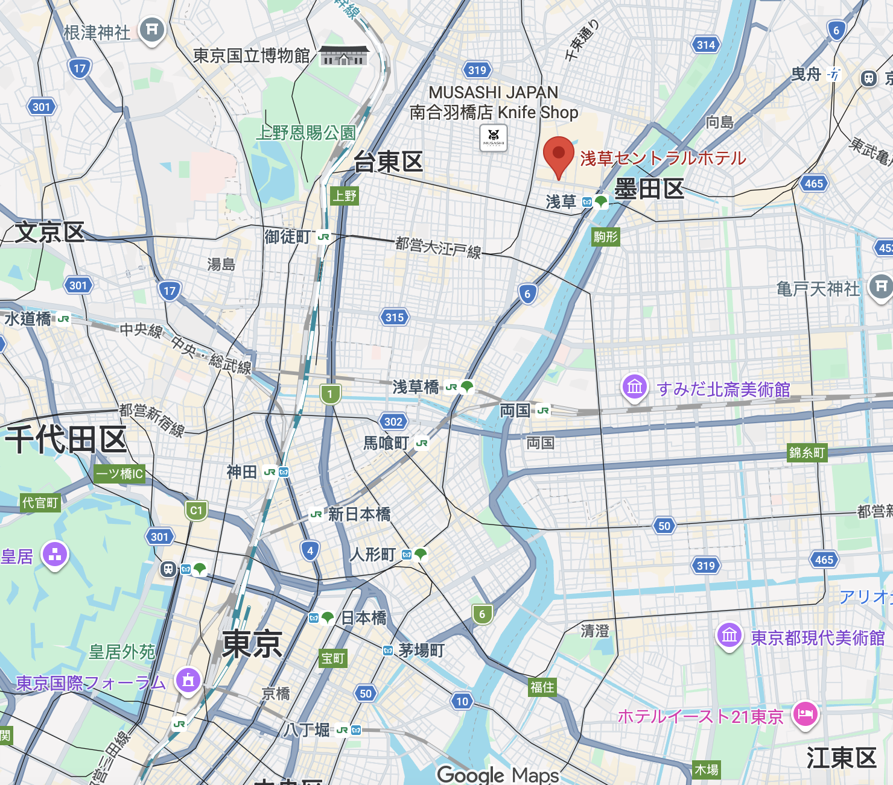
📍 飯店周邊景點
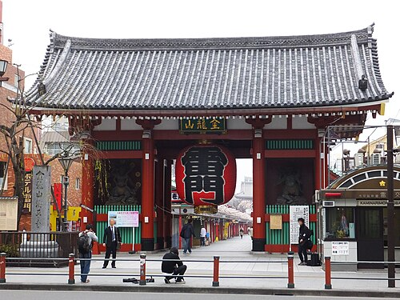
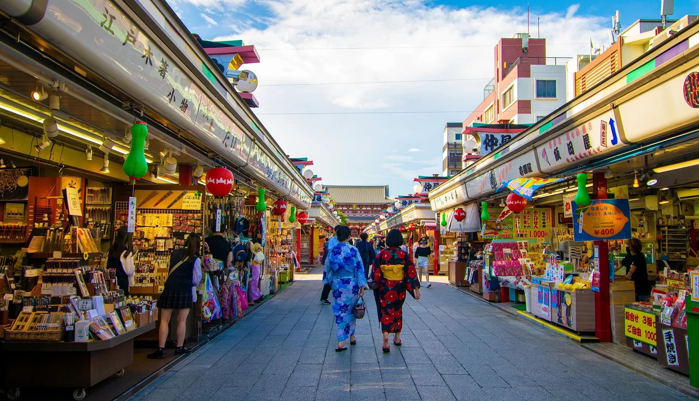
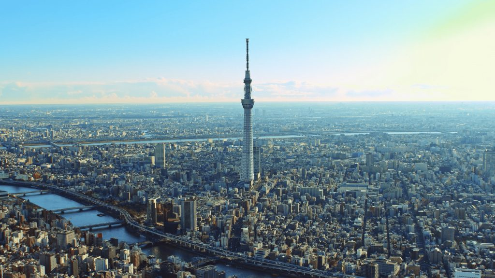
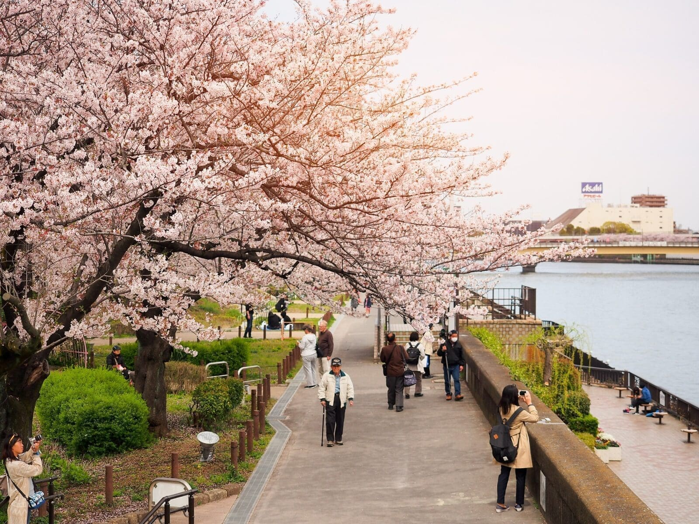
第一天 - 空降東京
| 時間 | 行程 | 地點 | 備註 |
|---|---|---|---|
| 08:30 | 集合＋報到＋托運行李 | 桃園機場第一航廈 | |
| 10:40 - 15:05 | 搭飛機 | 桃園機場 - 成田機場 | 星宇（含飛機餐，3 hr 25 min） |
| 15:05 - 16:20 | 入境日本＋拿行李 | 成田機場第二航廈 | |
| 16:20 - 17:20 | 前往飯店 | 成田機場 - 淺草中央酒店 | 車程約 1 小時 |
| 17:20 - 17:50 | 放行李＋稍作休息 | 淺草中央酒店 | |
| 17:50 - 19:30 | 晚餐 | 豬排店 Tonkatsu Toyama | 距飯店步行 10 分鐘 |
| 19:30 - 21:00 | 逛街、欣賞市容 | 淺草寺＋超市 | 都是步行，慢慢晃回飯店 |
第二天 - 富士山
| 時間 | 行程 | 地點 | 備註 |
|---|---|---|---|
| 06:50 | 集合 | 飯店大廳 | 早餐外帶 |
| 07:00 - 09:30 | 富士山取景點1 | 飯店 - 新倉山淺間公園 | 包車 (車程約 120 分鐘) |
| 09:30 - 09:45 | 前往纜車 | 新倉山淺間公園 - 富士山纜車（山腳） | 包車 (車程約 15 分鐘) |
| 09:45 - 13:00 | 排隊搭纜車 | 河口湖纜車 (來回) | 可憐的腿 |
| 13:00 - 14:30 | 午餐 | 餺飥藏 （山梨縣名產＿不動麵） | 包車 (車程約 10 分鐘) |
| 14:30 - 15:30 | 富士山取景點2＋採買伴手禮 | 大石公園 / 河口湖生活館 | 包車 (車程約 10 分鐘) |
| 15:30 - 17:30 | 觀賞自然奇景＋吃點心 | 忍野八海 | 包車 (車程約 30 分鐘) |
| 17:30 - 20:10 | 車上補眠 | 車上 | 包車 (車程約 160 分鐘) |
| 20:10 - 21:30 | 晚餐 | 漢堡排 Monblanc | 距飯店步行 2 分鐘 |
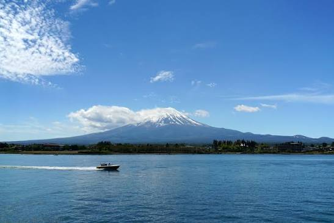
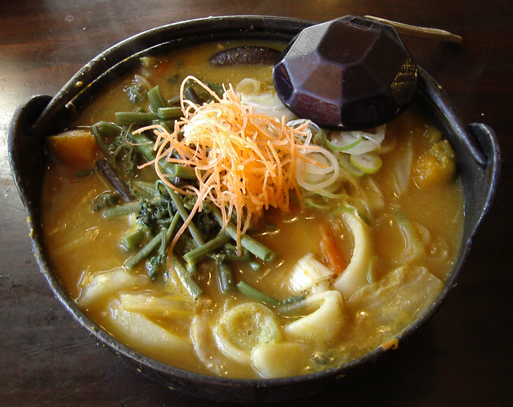
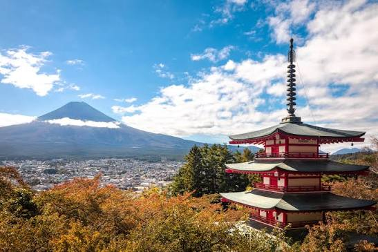
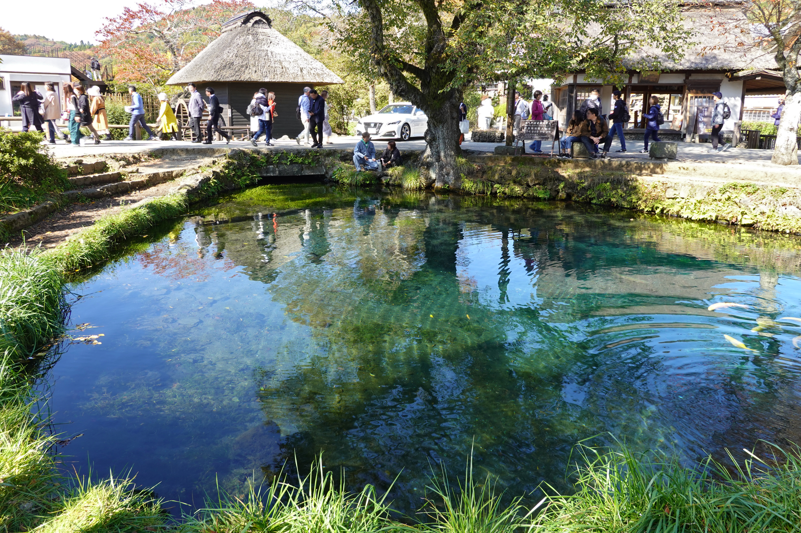
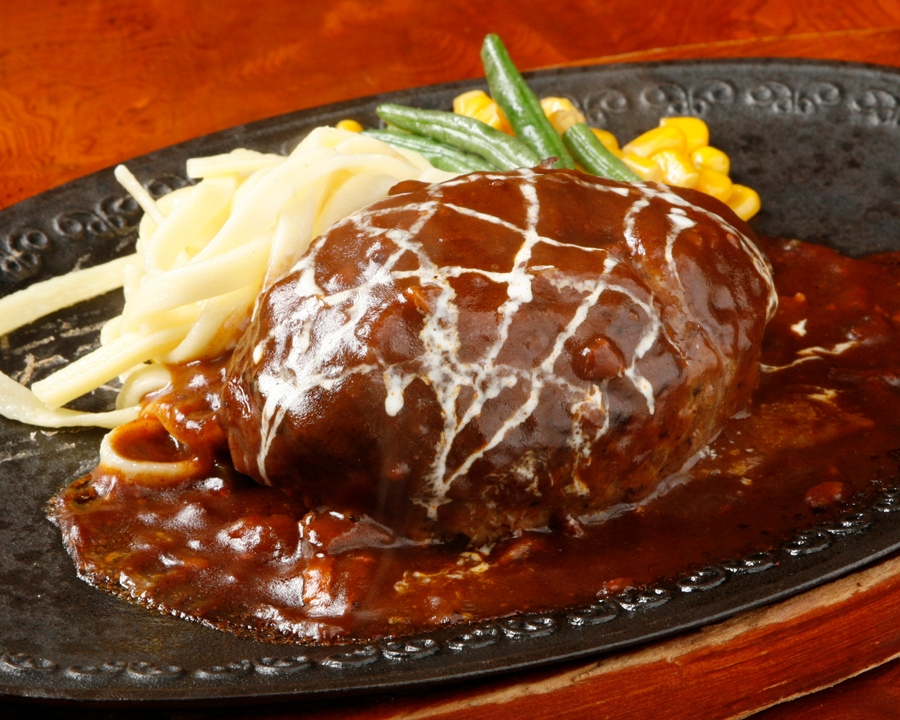
第三天 - 市區觀光
| 時間 | 行程 | 地點 | 備註 |
|---|---|---|---|
| 07:00 - 08:30 | 吃早餐 | 飯店二樓 | |
| 08:30 - 11:30 | 探索淺草、吃小吃 | 淺草寺祭拜、雷門、五重塔、仲見街 | 全步行 |
| 11:30 - 13:00 | 午餐 | 文字燒 Tsukishima Monja Okoge | 步行至餐廳 |
| 13:00 - 14:20 | 致富之路 | 小網神社 (洗錢) | 包車 (車程約 15 分鐘) |
| 14:20 - 15:30 | 下午茶＋知名地標（東京鐵塔） | 水果千層 Harbs | 包車 (車程約 20 分鐘) |
| 15:30 - 17:30 | 日本第一大鳥居 | 明治神宮 | 包車 (車程約 30 分鐘) |
| 17:30 - 19:00 | 吃晚餐 | 阿夫利拉麵 AFURI | 步行約 10 分鐘 |
| 19:00 - 21:00 | 伴手禮大採購 | 東京車站/地下街 | 步行 |
| 21:00 - 21:25 | 返回飯店 | 飯店 | 包車 (車程約 25 分鐘) |
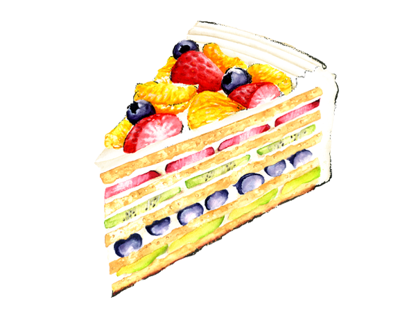
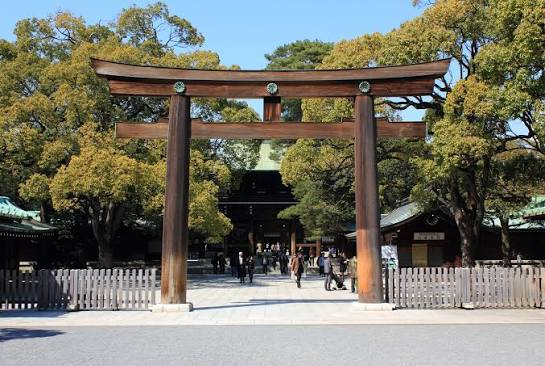
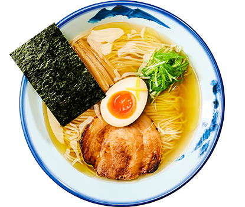
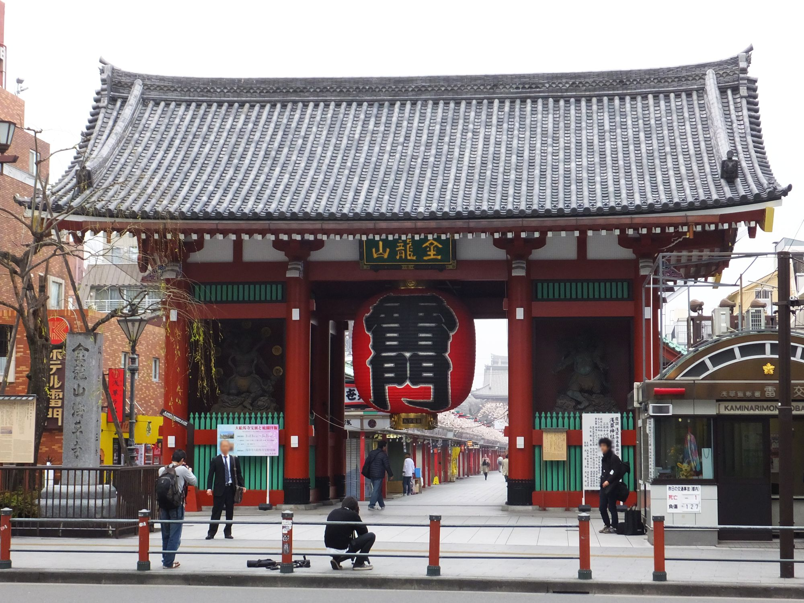
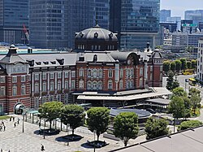
第四天 - 回到過去
| 時間 | 行程 | 地點 | 備註 |
|---|---|---|---|
| 07:00 - 08:30 | 吃早餐 | 飯店二樓 | |
| 08:30 - 11:00 | 深入日本第二大尊佛像 | 鎌倉大佛高德院 | 包車(車程約 90 分鐘) |
| 11:00 - 12:45 | 吃午餐 | 鎌倉必吃吻仔魚 Kawagoeya | 包車 (車程約 15 分鐘) |
| 12:45 - 15:00 | 飯後甜點＋散步消化＋採買伴手禮 | 小町通商店街＋鶴崗八幡宮 | 包車 (車程約 5 分鐘) |
| 15:00 - 18:00 | 古城巡禮＋夕陽餘暉 | 江之島 | 包車 (車程約 35 分鐘) |
| 18:00 - 19:30 | 返回飯店 | 車上補眠 | 包車 (車程約 90 分鐘) |
| 19:30 - 21:00 | 吃晚餐 | 火鍋 Mo-Mo-Paradise | 包車 (車程約 15 分鐘) |
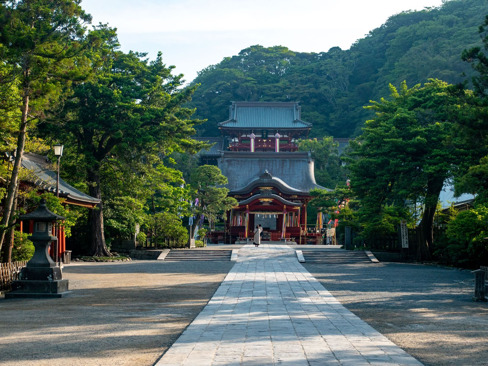

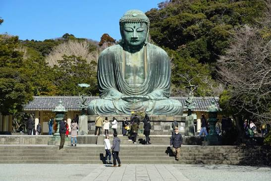
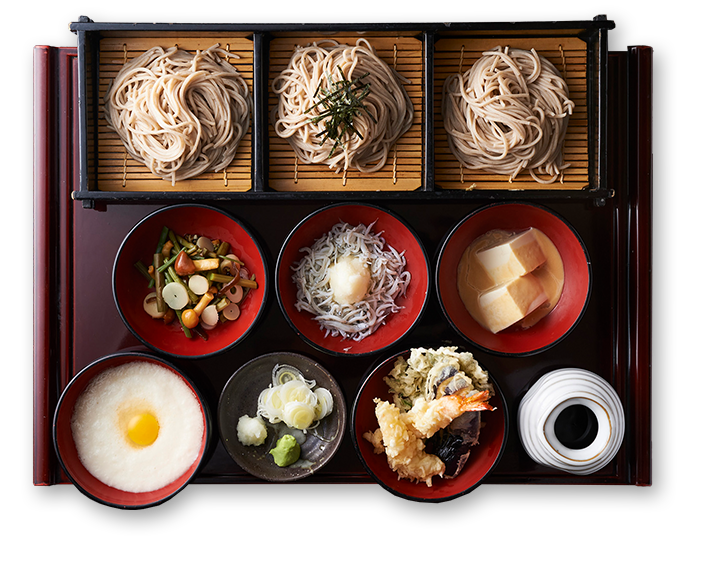
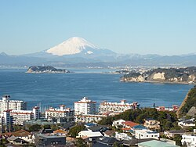
第五天 - 美好的假期怎麼過這麼快
| 時間 | 行程 | 地點 | 備註 |
|---|---|---|---|
| 07:00 - 09:00 | 早餐 | 飯店二樓 | 吃完早餐收拾行李 |
| 09:00 - 10:45 | 最終採買機會 | 飯店周邊 | 不需採買的人可以多睡一下 |
| 10:45 - 12:05 | 前往成田機場 | 飯店 - 成田機場 | 包車 (車程約 80 分鐘) |
| 12:05 - 14:10 | 午餐 | 機場美食街 | 午餐自理 |
| 14:10 - 16:50 | 搭飛機 | 成田機場 第二航廈 - 桃園機場 第一航廈 | 航程 3 小時 40 分鍾 |
行前通知
- 成田機場 → 東京：NEX 或巴士
- 市內：地鐵為主
- 記得確認交通卡與網路